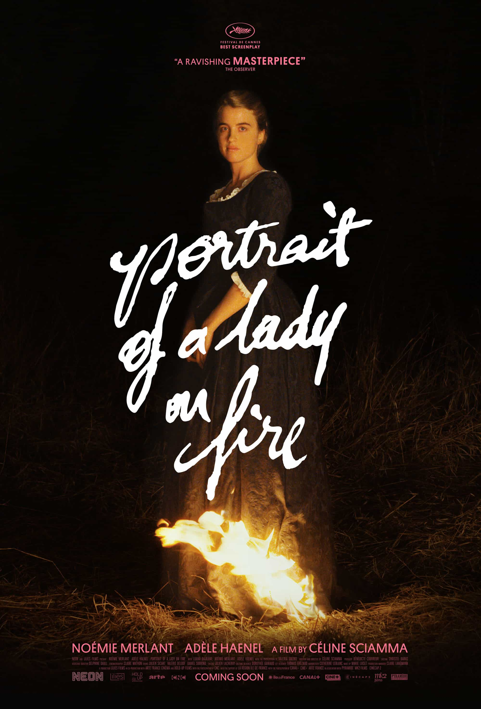

Portrait of a Lady on Fire
2019
Portrait of a Lady on Fire deals with equal parts forbidden class affairs and forbidden homosexual affairs, two topics that reel Dex into any cinema. He loves how whimsical the filming style is, and he's enamored by the dual lead performances. The film probably shows a maximum of ten minutes of screen time with men in the frame, and this is deliberate from the female director. It's radical in its artfulness and aggressive in its feminist messages, including lesbianism, reproductive care, and forced marriages.